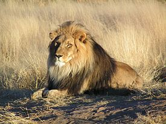

Рыбатекст используется дизайнерами, проектировщиками и фронтендерами, когда нужно быстро заполнить макеты или прототипы содержимым. Это тестовый контент, который не должен нести никакого смысла, лишь показать наличие самого текста или продемонстрировать типографику в деле. C помощью этого онлайн-генератора рыботекста можно пачками плодить как отдельные предложения и заголовки, так и целые абзацы отменнейшего рыбы-текста. А для любителей автоматизации даже реализован API фиштекста.
